Tutorial custom placing of windows and doors/fr
| Thème |
|---|
| Architecture |
| Niveau |
| Intermédiaire |
| Temps d'exécution estimé |
| 60 minutes |
| Auteurs |
| vocx |
| Version de FreeCAD |
| 0.18 ou ultérieure |
| Fichiers exemples |
| aucun |
| Voir aussi |
| None |
Introduction
Ce tutoriel montre comment placer des Arch fenêtres et des Arch portes personnalisées dans un modèle de bâtiment. Il utilise l'atelier Draft, l'atelier Arch et l'atelier Sketcher.
Les outils couramment utilisés sont: Draft Grille, Draft Aimantation, Draft Polyligne, Arch Mur, Arch Fenêtre et Sketcher Esquisse. L'utilisateur doit être familiarisé avec les esquisses contraignantes.
Ce tutoriel est inspiré des tutoriels de jpg87 publiés dans les forums FreeCAD.
Voir également le fil suivant pour plus d'informations sur la position des fenêtres et des portes.
Voir également la page suivante pour quelques vidéos sur la façon d'aligner les fenêtres.
Démarrer
1. Ouvrez FreeCAD, créez un nouveau document vide et passez à l'atelier Arch
2. Assurez-vous que vos unités sont correctement définies dans le menu Edition → Préférences → Général → Unités. Par exemple, MKS (m/kg/s/degré) est bon pour gérer les distances dans un bâtiment typique; de plus, définissez le nombre de décimales sur 4 pour considérer même les plus petites fractions du mètre.
3. Utilisez le bouton Draft Visibilité de la grille pour afficher une grille avec une résolution suffisante. Vous pouvez modifier l'apparence de la grille dans le menu Edition → Préférences → Draft → Grille et ancrage → Grille. Définissez des lignes tous les 50 mm, avec des lignes principales toutes les 20 lignes (tous les mètres) et 1000 lignes au total (la grille couvre une superficie de 50 mx 50 m).
4. Zoom arrière de la vue 3D si vous êtes trop près de la grille.
Nous sommes maintenant prêts à créer un mur simple sur lequel nous pouvons positionner les fenêtres et les portes.
Placement d'un mur
5. Utilisez l'outil Draft Fil pour créer un fil. Allez dans le sens antihoraire.
- 5.1. Premier point dans (0, 4, 0); dans la boîte de dialogue, saisissez 0 m Enter, 4 m Enter, 0 m Enter.
- 5.2. Deuxième point dans (2, 0, 0); dans la boîte de dialogue, saisissez 2 m Enter, 0 m Enter, 0 m Enter.
- 5.3. Troisième point dans (4, 0, 0); dans la boîte de dialogue, saisissez 4 m Enter, 0 m Enter, 0 m Enter.
- 5.4. Quatrième point dans (6, 2, 0); dans la boîte de dialogue, entrez 6 m Enter, 2 m Enter, 0 m Enter.
- 5.4. Cinquième point dans (6, 5, 0); dans la boîte de dialogue, saisissez 6 m Enter, 5 m Enter, 0 m Enter.
- 5.5. Sur le pavé numérique, appuyez sur A pour terminer le fil.
- 5.6. Dans le pavé numérique, appuyez sur 0 pour obtenir une vue axonométrique du modèle.
- Note: assurez-vous que la case Relative est désactivée si vous donnez des coordonnées absolues.
- Note 2: les points peuvent également être définis avec le pointeur de la souris en choisissant les intersections sur la grille, à l'aide de la barre d'outils Draft Aimantation et de la méthode Draft Aimantation Grille .
- Note 3: vous pouvez également créer des formes par programmation en créant des scripts dans Python. Attention, la plupart des fonctions attendent leur saisie en millimètres.
import FreeCAD
import Draft
p = [FreeCAD.Vector(0.0, 4000.0, 0),
FreeCAD.Vector(2000.0, 0.0, 0.0),
FreeCAD.Vector(4000.0, 0.0, 0.0),
FreeCAD.Vector(6000.0, 2000.0, 0.0),
FreeCAD.Vector(6000.0, 5000.0, 0.0)]
w = Draft.makeWire(p, closed=False)
6. Sélectionnez DWire et cliquez sur l'outil Arch Mur; le mur est immédiatement créé avec une largeur (épaisseur) par défaut de 0,2 m et une hauteur de 3 m.
{kind=link}
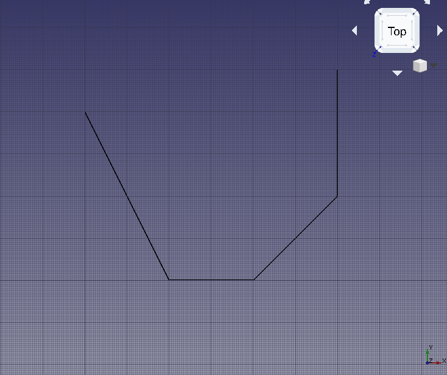
Fil de base pour le mur
{kind=link}
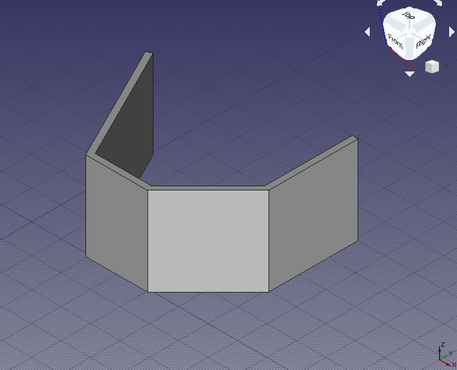
Mur construit à partir du fil
Placement de portes et fenêtres prédéfinies
7. Cliquez sur l'outil Arch Fenêtre; comme préréglage, sélectionnez Simple door et modifiez la hauteur à 2 m.
- 7.1. Changez l'accrochage en Draft Milieu et essayez de sélectionner le bord inférieur du mur frontal; faites pivoter la vue standard si nécessaire pour vous aider à choisir le bord et non la face du mur; lorsque le milieu est actif, cliquez pour placer la porte.
- 7.2. Cliquez à nouveau sur l'outil Arch Fenêtre et placez une autre porte, mais cette fois au milieu du mur arrière; faites pivoter la vue standard si nécessaire.
{kind=link}
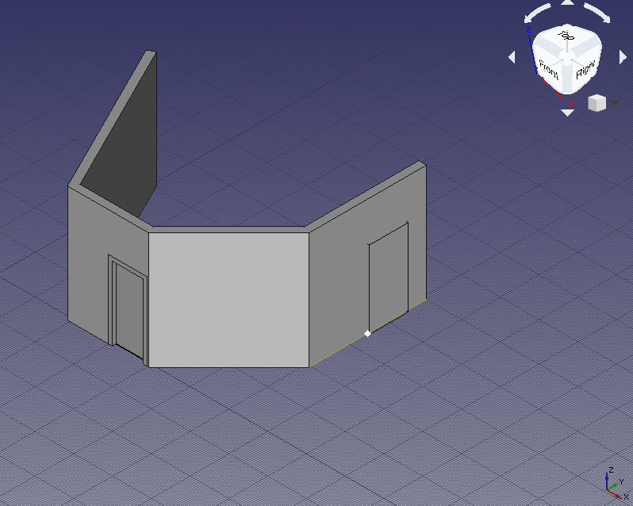
Accrochage au milieu du bord inférieur du mur pour placer la porte
- Note: la
Sill heightest la distance entre le sol et le bord inférieur de l'élément. Pour les portes, laSill height(Hauteur du seuil) est généralement de 0 m car les portes touchent normalement le sol; d'autre part, les fenêtres ont une séparation habituelle de 0,5 m à 1,5 m du sol.Sill heightne peut être définie que lors de la création initiale de la fenêtre ou de la porte à partir d'un préréglage. Une fois la fenêtre ou la porte insérée, modifiez son emplacement en éditant la DonnéesPosition du vecteur[x, y, z]de l'Sketcher Esquisse sous-jacente.
Création de portes et fenêtres personnalisées
8. Passez à l'atelier Sketcher; sélectionnez la partie du mur à droite qui n'a pas de porte; cliquez sur Nouvelle esquisse; sélectionnez FlatFace comme méthode de pièce jointe. Si la géométrie existante obstrue votre vue, cliquez sur la vue en coupe pour la supprimer.
9. Dessinez une esquisse quelconque contenant trois polyligne fermées. Assurez-vous de fournir des contraintes à toutes les polyligne.
- 9.1. La polyligne extérieure est la plus grosse et définira les principales dimensions de l'objet fenêtre, ainsi que la taille du trou créé lorsqu'elle est intégrée dans un Arch Mur. Assurez-vous que les dimensions sont nommées correctement, par exemple
WidthetHeight. Une contrainte définit également la courbure de la polyligne extérieure; donnez-lui un nom approprié, commeHeightCurve. - 9.2. La deuxième polyligne est décalée de la polyligne extérieure et, ensemble, elles définissent la largeur du cadre fixe de la fenêtre. Nommez le décalage de manière appropriée, par exemple
FrameFixedOffset. Il sera utilisé pour les décalages verticaux et horizontaux supérieurs. Le décalage du bas, s'il est défini sur zéro, aura pour effet que le cadre fixe touche le bas de la fenêtre; cela peut être utilisé pour modéliser une porte au lieu d'une fenêtre. Donnez-lui un nom approprié, commeFrameFixedBottom. - 9.3. La troisième polyligne, la plus à l'intérieur, est décalée de la deuxième polyligne, et avec elle, elles définissent le cadre de la fenêtre qui peut s'ouvrir. La polyligne la plus à l'intérieur définit également la taille du panneau de verre. Encore une fois, donnez des noms significatifs à ces décalages, par exemple,
FrameInnerOffsetetFrameInnerBottom. - 9.4. Afin de construire avec succès l'esquisse, utilisez les contraintes horizontales (Sketcher Contrainte horizontale) et verticales (Sketcher Contrainte verticale) pour les côtés droits; utilisez la géométrie de construction auxiliaire (Sketcher Géométrie de construction) et les contraintes tangentielles (Sketcher Contrainte tangente) pour placer correctement les arcs de cercle en haut. Comme dans ce cas, la fenêtre est symétrique, considérez les contraintes d'égalité (Sketcher Contrainte d'egalité), symétrique (Sketcher Contrainte de symétrie) et de point sur objet (Sketcher Contrainte Point sur un objet) là où cela a du sens.
{kind=link}
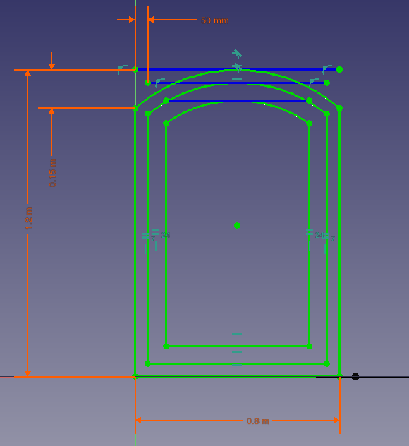
Contraintes pour les fils extérieurs de l'esquisse qui forment la fenêtre
{kind=link}
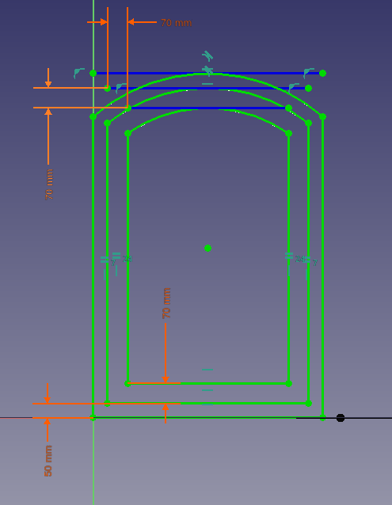
Contraintes pour les fils intérieurs de l'esquisse qui forment la fenêtre
10. Une fois l'esquisse entièrement contrainte, appuyez sur Close pour quitter l'esquisse (Sketcher Quitter l'esquisse).
- 10.1. Puisqu'une face du mur a été sélectionnée lors de l'étape initiale de création de l'esquisse, l'esquisse est coplanaire avec cette face; cependant, il peut être dans la mauvaise position, loin du mur. Si tel est le cas, ajustez DonnéesPosition dans DonnéesAttachment Offset. Définissez DonnéesPosition sur
[4 m, 1 m, 0 m]de sorte que l'esquisse soit centrée dans le mur et à un mètre au-dessus du niveau du sol. - 10.2. Vous pouvez voir les contraintes nommées sous DonnéesConstraints. Les valeurs peuvent être modifiées pour voir les cotes de changement d'esquisse immédiatement.
{kind=link}
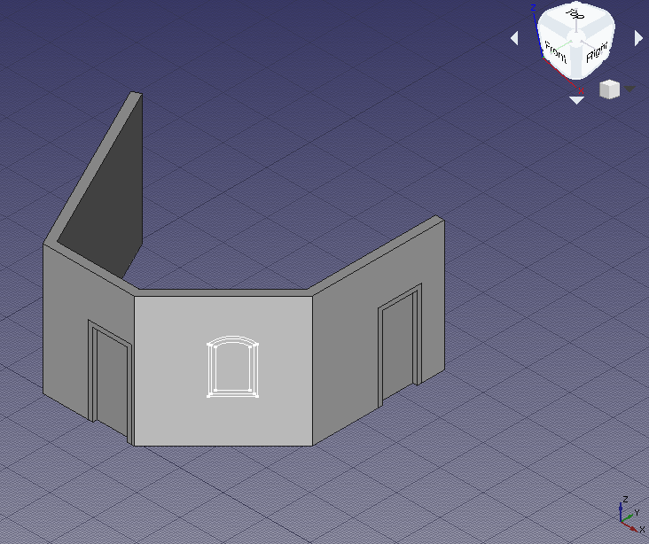
Esquisse de fenêtre déplacée à la position souhaitée sur le mur
{kind=link}
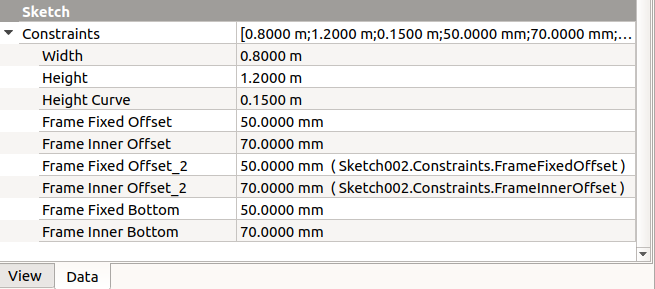
Contraintes nommées de l'esquisse, qui peuvent être modifiées sans entrer dans l'esquisse
11. Revenez à l'atelier Arch et, avec le nouveau Sketch002 sélectionné, utilisez Arch Fenêtre. Une fenêtre sera créée et fera un trou dans le mur. La fenêtre est créée à partir d'une esquisse personnalisée, et non à partir d'un préréglage, elle doit donc être modifiée pour afficher correctement ses composants, à savoir le cadre fixe, le cadre intérieur et le panneau de verre.
{kind=link}
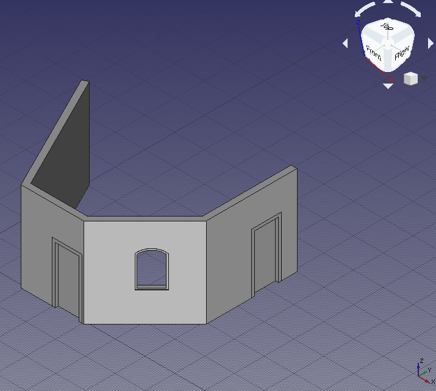
Fenêtre personnalisée créée à partir de l'esquisse; elle n'a toujours pas de cadre approprié, ni de verre
Configuration de la fenêtre personnalisée
12. Dans l'arborescence, sélectionnez Sketch002 sous-jacent à Window et appuyez sur Espace ou modifiez la propriété VueVisibility en true.
13. Double-cliquez sur Window dans l'arborescence pour commencer à l'éditer.
- 13.1. Dans la boîte de dialogue
Window elements, il y a deux volets,WiresetComponents. Il y a trois fils,Wire0,Wire1etWire2, et un composant,Default. Les fils font référence aux boucles fermées qui ont été dessinées dans l'esquisse; les composants définissent les zones de l'esquisse qui seront extrudées pour créer des cadres ou des panneaux de verre avec des épaisseurs réelles; ces zones sont délimitées par les fils. Une fenêtre créée à partir d'un preset a déjà deux composants,OuterFrameetGlass. La fenêtre personnalisée doit être modifiée pour avoir une structure similaire.
{kind=link}
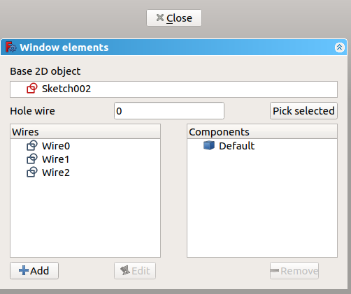
Boîte de dialogue pour modifier une fenêtre ou une porte
- 13.2. Cliquez sur
Default, puis sur le bouton Remove pour l'éliminer.
- 13.3. Cliquez sur Add; cela montre les propriétés d'un nouveau composant comme
Name,Type,Wires,Thickness,Offset, { {incode|Hinge}} etOpening mode. Donnez un nom, tel queOuterFrame, choisissezFramepourType, et cliquez surWire0puisWire1; ils doivent être mis en évidence dans la fenêtre 3D. Ajoutez une petite valeur pourThickness,15 mmet cochez la case pour ajouter la valeur par défaut. Cette valeur par défaut est la longueur affectée à la propriété DonnéesFrame; une valeur par défaut similaire peut être attribuée à la propriété DonnéesOffset. Cliquez sur le bouton +Create/update component pour terminer la modification du composant.
- 13.4. Cliquez sur Add; donnez un autre nom, tel que
InnerFrame, choisissezFramepourType, et cliquez surWire1puisWire2. Ajoutez unThickness,60 mm, etOffset,15 mm. Cliquez ensuite sur le bouton +Create/update component.
- 13.5. Cliquez sur Add; donnez un autre nom, tel que
Glass, choisissezGlass panelpourType, et cliquez surWire2. Ajoutez unThickness,10 mm, etOffset,40 mm. Cliquez ensuite sur le bouton +Create/update component. Si l'un des trois composants doit être modifié, sélectionnez-le et appuyez sur Edit; les modifications ne sont enregistrées qu'après avoir appuyé sur le bouton +Create/update component.
{kind=link}
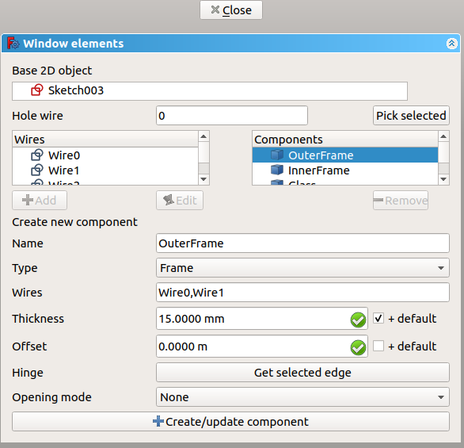
Modification d'un composant précédemment défini d'une fenêtre ou d'une porte
- 13.6. Si tout est défini, cliquez sur Close pour terminer l'édition de la fenêtre. L'esquisse peut redevenir masquée, mais la fenêtre affichera des éléments solides distincts pour
OuterFrame,InnerFrameetGlass. Donnez une valeur de100 mmà DonnéesFrame pour attribuer une épaisseur par défaut, qui sera ajoutée à la valeur spécifiée dans le composantOuterFrame.
{kind=link}
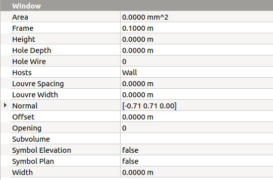
Vue des propriétés de la fenêtre pour ajouter la longueur du cadre par défaut, la longueur du décalage et d'autres options
{kind=link}
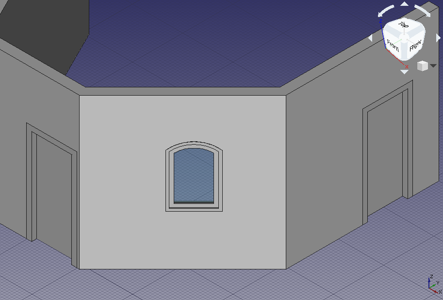
Fenêtre finie avec des composants appropriés intégrés dans le mur
Duplication de la fenêtre personnalisée
14. Dans l'arborescence, sélectionnez Window et son sous-jacent Sketch002. Puis allez dans Edition → Copier la sélection, et répondez No si on vous demande de dupliquer les dépendances non sélectionnées. Un nouveau Window001 et Sketch003 apparaîtront dans la même position que les éléments d'origine.
15. Sélectionnez le nouveau Sketch003. Accédez à la propriété DonnéesMap Mode et cliquez sur les points de suspension à côté de la valeur FlatFace. Dans la fenêtre 3D, sélectionnez le côté gauche du mur qui n'a aucun élément; faites pivoter la vue standard si nécessaire. Modifiez Attachment offset en [-1 m, 0 m, 0 m] pour centrer la fenêtre, puis cliquez sur OK. L'esquisse et la fenêtre doivent apparaître dans une nouvelle position.
- Note: Part Ancrage peut également être effectuée en passant à atelier Part, puis en utilisant le menu Pièce → Attachment.
{kind=link}
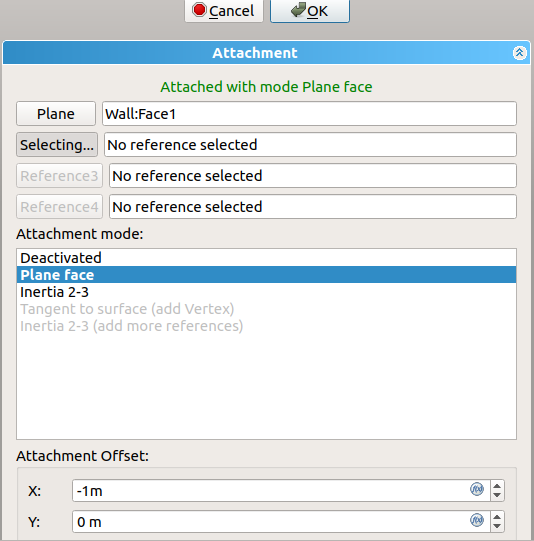
Boîte de dialogue pour modifier le plan d'association de l'esquisse
16. Vous pouvez ajuster les dimensions de la nouvelle fenêtre en modifiant les paramètres nommés dans Sketch003 sous DonnéesContraintes, par exemple, définissez Height à 2 m et Frame Fixed Bottom à 0 m. Appuyez ensuite sur Ctrl+R pour recalculer le modèle. Si le mur n'affiche pas un plus grand trou pour la nouvelle fenêtre, sélectionnez le mur dans l'arborescence, faites un clic droit et choisissez Mark to recompute, puis appuyez sur Ctrl+R à nouveau.
17. Ces opérations ont changé la position de la nouvelle fenêtre, mais l'ouverture dans le mur n'a pas l'air correcte. Il est incliné, c'est-à-dire que le trou n'est pas perpendiculaire à la face du mur et qu'il peut même couper d'autres parties du mur. Le problème est que Window001 a conservé les informations DonnéesNormal de l'original Window.
{kind=link}
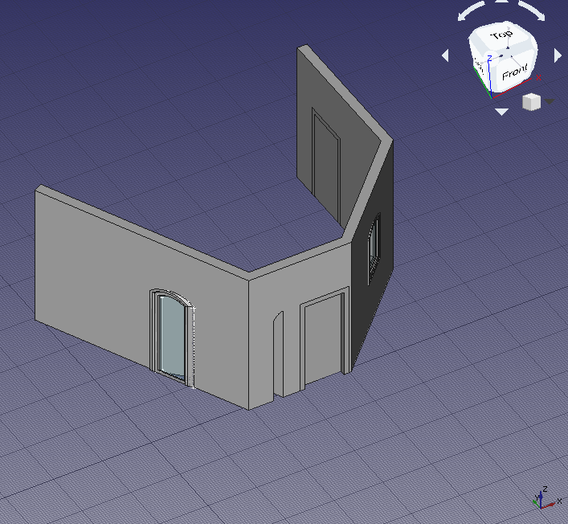
Ouverture incorrecte dans le mur en raison d'une mauvais normale de la fenêtre
Normales des portes et fenêtres
18. Chaque objet Arch Fenêtre contrôle l'extrusion de son corps et l'ouverture qui est créée dans sa paroi hôte au moyen de sa DonnéesNormal.
La normale est un vecteur [x, y, z] qui indique une direction perpendiculaire à un mur. Lorsqu'un préréglage de fenêtre ou de porte est créé avec l'outil Arch Fenêtre directement sur un Arch Mur, la normale est automatiquement calculée et la fenêtre ou la porte résultante est correctement alignée; les deux premiers objets, Door et Door001, ont été créés de cette manière.
De la même manière, lorsqu'une esquisse est créée en sélectionnant une surface plane, elle est orientée sur ce plan. Ensuite, lorsque l'outil Arch Fenêtre est utilisé, la fenêtre utilisera normalement la direction perpendiculaire à l'esquisse. Ce fut le cas avec le troisième objet, la Window personnalisée.
Si la fenêtre existe déjà et doit être déplacée, comme c'était le cas avec l'objet Window001 dupliqué, l'esquisse doit être remappée sur un autre plan; cela déplace à la fois l'esquisse et la fenêtre, mais celle-ci ne met pas automatiquement à jour sa normale, elle contient donc des informations d'extrusion incorrectes. La normale doit être calculée manuellement et écrite dans DonnéesNormal.
Les trois valeurs du vecteur normal sont calculées comme suit.
x = -sin(angle)
y = cos(angle)
z = 0
Où angle est l'angle de l'axe Z local de l'esquisse par rapport à l'axe Y global.
Lorsqu'une esquisse est créée, elle a toujours deux axes, un X local (rouge) et un Y local (vert). Si l'esquisse est mappée sur le plan de travail global XY, ces axes sont alignés; mais si l'esquisse est mappée sur les plans XZ globaux ou YZ globaux, comme cela est courant avec les fenêtres et les portes (les esquisses sont "debout"), alors le Z local (bleu) forme un angle avec l'axe Y global; cet angle varie de -180 à 180 degrés. L'angle est considéré comme positif s'il s'ouvre dans le sens antihoraire, et il est négatif s'il s'ouvre dans le sens horaire, en partant de l'axe Y global.
{kind=link}
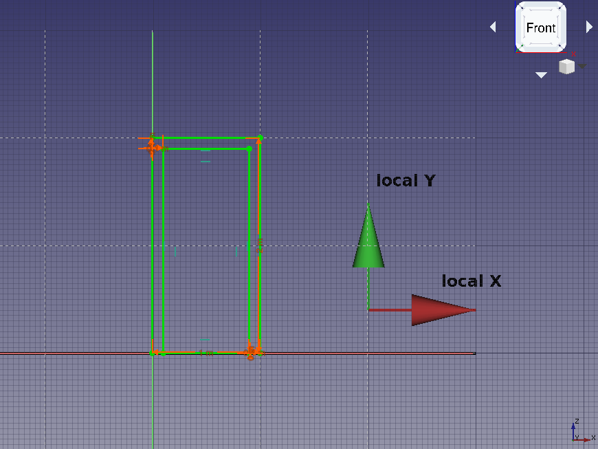
Coordonnées locales d'une esquisse "debout", c'est-à-dire mappée sur le plan XZ global
{kind=link}
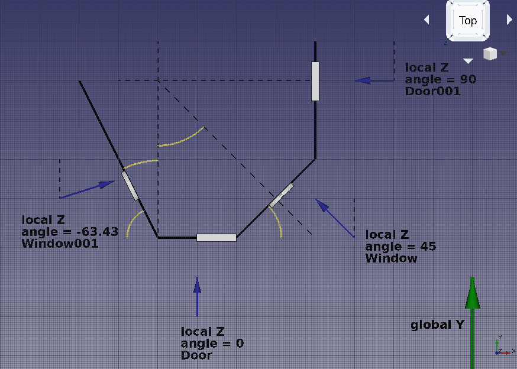
Directions prévues des normales pour chaque porte et fenêtre
Si nous regardons la géométrie créée jusqu'à présent, nous voyons les normales suivantes.
Door- Le Z local est aligné sur le Y global, par conséquent, l '
angleest nul. Le vecteur normal est
x = -sin(0) = 0
y = cos(0) = 1
z = 0
ou DonnéesNormal est [0, 1, 0].
Door001- Le Z local est tourné de 90 degrés par rapport au Y global, par conséquent, le
angleest de 90 (positif, car il s'ouvre dans le sens antihoraire). Le vecteur normal est
x = -sin(90) = -1
y = cos(90) = 0
z = 0
ou DonnéesNormal est [-1, 0, 0].
Window- Le Z local est tourné de 45 degrés par rapport au Y global, donc le
angleest de 45 (positif, car il s'ouvre dans le sens antihoraire). Le vecteur normal est
x = -sin(45) = -0.7071
y = cos(45) = 0.7071
z = 0
ou DonnéesNormal est [-0.7071, 0.7071, 0].
Window001- La direction Z locale est trouvée en utilisant l'outil Draft Dimension et en mesurant l'angle que fait le tracé du mur (
Wire) avec l'axe Y global ou toute ligne alignée dessus. Cet angle est26.57; l'angle souhaité est le complément de cela, donc90 - 26.57 = 63.43.
Cela signifie que l'axe Z local est tourné de 63,43 degrés par rapport au Y global, par conséquent, l'angle est de -63,46 (négatif, car il s'ouvre dans le sens des aiguilles d'une montre). Le vecteur normal est
x = -sin(-63.43) = 0.8943
y = cos(-63.43) = 0.4472
z = 0
Par conséquent DonnéesNormal devrait être changé en [0.8943, 0.4472, 0].
Après avoir effectué ces modifications, recalculez le modèle avec Ctrl+R. Si le mur ne met pas à jour le trou, sélectionnez-le dans l'arborescence, faites un clic droit et choisissez Mark to recompute puis appuyez à nouveau sur Ctrl+R.
19. L'orientation de l'extrusion de la fenêtre est résolue, ainsi que l'ouverture dans le mur.
{kind=link}
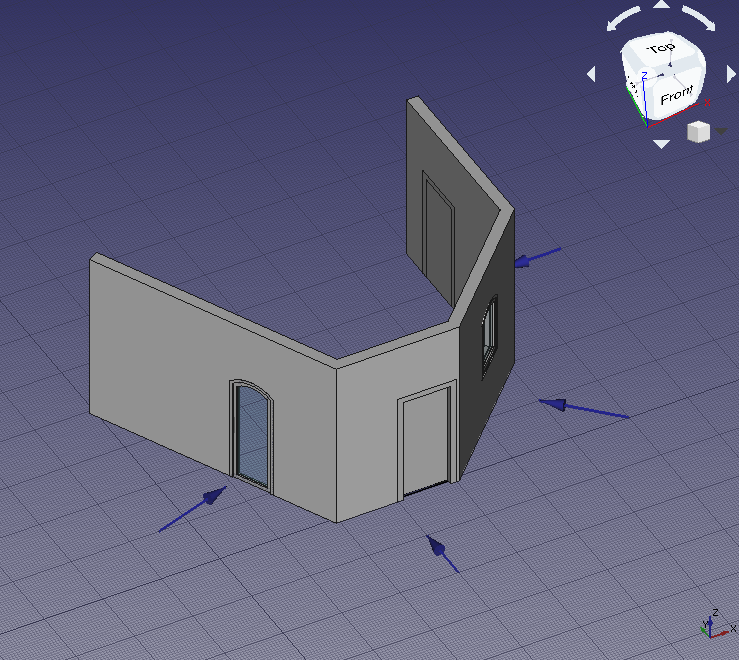
Ouverture correcte dans le mur en raison de la bonne normale de la fenêtre
Remarques finales
20. Comme démontré, l'emplacement initial de la Arch Fenêtre est très important. L'utilisateur doit soit
- utilisez l'outil Arch Fenêtre pour insérer et aligner automatiquement un préréglage sur un mur, ou
- mappez une esquisse sur le mur souhaité et construisez la fenêtre après cela.
Si une fenêtre existe déjà et qu'elle doit être déplacée, l'esquisse de support doit être remappée sur un nouveau plan et les DonnéesNormal de la fenêtre doivent être recalculées.
La nouvelle direction normale peut être obtenue en mesurant l 'angle du nouveau mur par rapport à l'axe Y global, en considérant si cet angle est positif (sens antihoraire) ou négatif (sens horaire), et en utilisant une formule simple.
x = -sin(angle)
y = cos(angle)
z = 0
Pour confirmer que les opérations sont correctes, la grandeur absolue du vecteur normal doit être de un. C'est,
abs(N) = 1 = sqrt(x^2 + y^2 + z^2)
abs(N) = 1 = sqrt(sin^2(angle) + cos^2(angle) + z^2)
- Ébauche 2D : Esquisse, Ligne, Polyligne, Rectangle, Arc, Arc par 3 points, Cercle, Ellipse, Polygone, B-Spline, Courbe de Bézier, Courbe de Bézier cubique, Point, Congé
- 3D/BIM : Site, Bâtiment, Niveau, Espace, Mur, Mur-rideau, Colonne, Poutre, Dalle, Porte, Fenêtre, Revêtement, Conduite, Raccord, Escaliers, Toit, Panneau, Ossature, Clôture, Treillis, Équipement
- Outils de renforcement : Armature personnalisée, Armature droite, Armature en U, Armature en L, Armature en étrier, Armature cintrée, Armature hélicoïdale, Armature pour colonne, Armature pour poutre, Armature de dalle, Armature de semelle
- Outils 3D génériques : Profilé, Boîte, Générateur de formes, Surface liée, Bibliothèque d'objets, Composant, Référence externe
- Annotation : Dimension alignée, Dimension horizontale, Dimension verticale, Texte, Ligne de référence, Étiquette, hachure, Axes, Système d'axes, Grille, Plan de coupe, Dessin 2D, Vue 2D, Coupe 2D, Feuille TechDraw, Nouvelle vue
- Aimantation : Verrouiller l'aimantation, Aimantation Extrémité, Aimantation Milieu, Aimantation Centre, Aimantation Angle, Aimantation Intersection, Aimantation Perpendiculaire, Aimantation Extension, Aimantation Parallèle, Aimantation Spécial, Aimantation Au plus proche, Aimantation Orthogonal, Aimantation Grille, Aimantation Au plan de travail, Aimantation Dimensions, Basculer la grille, Plan de travail de devant, Plan de travail en haut, Plan de travail de côté, Plan de travail
- Modifier : Déplacer, Pivoter, Échelle, Miroir, Cloner, Lien, Copier, Copie simple, Composé, Décaler en 2D, Décaler, Ajuster ou prolonger, Joindre, Scinder, Étirer, Draft <=> Esquisse, Agréger, Désagréger, Ajouter, Supprimer, Réseau orthogonal, Réseau selon une courbe, Réseau polaire, Réseau de points, Couper selon un plan, Extrusion, Union, Soustraction, Intersection
- Gérer : Configurer les BIM, Configurer un projet, Fenêtres & portes, Éléments IFC, Quantités IFC, Propriétés IFC, Classification, Calques, Matériaux, BIM Rapport, Nomenclature, Contrôle en amont, Éditer style d'annotation
- Utilitaires : Corbeille, Vue du plan de travail, Sélection groupée, Définir la Pente, Proxy de plan de travail, Ajouter au groupe de construction, Diviser un maillage, Maillage vers forme, Sélection de maillages non-manifold, Supprimer la forme, Boucher des trous, Fusionner des murs, Vérification, Basculer en B-rep IFC, Bascule des sous composants, Prendre des cotes, Comparateur d'IFC, Explorateur d'IFC, Tableur IFC, Plan pour image, Cloner libre, Reconnecter, Coller, Re-extruder
- Outils des panneaux : Panneau, Découpe de panneau, Feuille de panneaux, Calepinage
- Outils des structures : Structure, Système structurel, Multiples structures
- Outils IFC : Projet IFC, IFC Diff, IFC Expand, Convert to IFC Project, IfcOpenShell Update
- Nudge: Nudge Switch, Nudge Up, Nudge Down, Nudge Left, Nudge Right, Nudge Rotate Left, Nudge Rotate Right, Nudge Extend, Nudge Shrink
- Additionnel : Préférences, Réglage fin, Importer/Exporter, IFC, DAE, OBJ, JSON, 3DS, SHP
- Drafting : Ligne, Polyligne, Congé, Arc, Arc par 3 points, Cercle, Ellipse, Rectangle, Polygone, B-spline, Courbe de Bézier cubique, Courbe de Bézier, Point, Surfaces liées, Formes à partir de texte, Hachure
- Annotation : Texte, Dimension, Étiquette, Éditeur de styles d'annotations, Widget d'échelle d'annotation.
- Modification : Déplacer,Pivoter,Échelle,Miroir, Décalage, Ajuster ou prolonger, Étirer, Cloner, Réseau orthogonal, Réseau polaire, Réseau circulaire, Réseau selon une courbe, Réseau lié selon une courbe, Réseau de points, Réseau lié selon des points, Éditer, Surligner les sous éléments, Joindre, Scinder, Agréger, Désagréger, Polyligne vers B-spline, Draft vers esquisse, Pente, Inverser le texte de la dimension, Vue 2D d'une forme
- Barre Draft : Plan de travail, Définir le style, Basculer en mode construction, Groupement automatique
- Aimantation : Verrouillage de l'aimantation, Aimantation terminaison, Aimantation milieu, Aimantation centre, Aimantation angle, Aimantation intersection, Aimantation perpendiculaire, Aimantation extension, Aimantation parallèle, Aimantation spéciale, Aimantation au plus proche, Aimantation orthogonal, Aimantation grille, Aimantation plan de travail, Aimantation dimensions, Basculer la grille
- Utilitaires : Appliquer le style, Calque, Gestionnaire de calques, Nommer un groupe, Sélection groupée, Ajouter à un calque, Déplacer vers un groupe, Ajouter au groupe de construction, Mode d'affichage, Proxy de plan de travail, Réparer, Barre d'aimantation
- Additionnels : Contrainte, Motif, Préférences, Préférences d'Import Export, DXF/DWG, SVG, OCA, DAT
- Menu contextuel :
- Conteneur du calque : Ajouter un nouveau calque, Réassigner les propriétés de tous les calques, Fusionner les calques en double
- Calque : Groupement automatique, Réassigner les propriétés du calque, Sélection groupée
- Texte : Ouvir les hyperliens
- Filaire : Aplatir
- Proxy de plan de travail : Enregistrer la position de la caméra, Enregistrer l'état des objets
- Général : Créer une esquisse, Modifier une esquisse, Ancrer une esquisse, Réorienter une esquisse, Valider une esquisse, Fusionner des esquisses, Esquisse miroir, Quitter l'esquisse, Vue de l'esquisse, Vue en coupe, Arrêt de l'opération, Grille, Aimantation, Ordre d'affichage
- Géometries : Point, Polyligne, Ligne, Arc par centre, Arc par 3 Points, Arc d'ellipse, Arc d'hyberbole, Arc de parabole, Cercle par centre, Cercle par 3 points, Ellipse par centre, Ellipse par 3 points, Rectangle, Rectangle centré, Rectangle arrondi, Triangle équilatéral, Carré, Pentagone, Hexagone, Heptagone, Octogone, Polygone régulier, Contour oblong, Contour oblong en arc, B-spline, B-spline périodique, B-spline par des nœuds, B-spline périodique par des nœuds, Géométrie de construction
- Contraintes :
- Contraintes de dimension : dimensionnel, horizontale, verticale, de distance, de rayon/diamètre, de rayon, de diamètre, angulaire, fixage
- Contraintes géometriques : de coïncidence unifiée, de coïncidence, point sur objet, horizontale/verticale, horizontale, verticale, parallèle, perpendiculaire, tangent/colinéaire, d'égalité, de symétrie, de blocage, de réfraction
- Outils de contraintes : Contraintes pilotantes, Activer les contraintes
- Outils d'esquisse : Congé, Chanfrein, Ajuster, Diviser, Prolonger, Projection, Intersection, Copie carbone, Sélectionner l'origine, Axe horizontal, Axe vertical, Déplacer/dupliquer, Pivoter/dupliquer, Mise à l'échelle, Décaler, Symétriser, Supprimer l'alignement des axes, Supprimer toute la géométrie, Supprimer toutes les contraintes, Copier, Couper, Coller
- Outils des B-Spline : Convertir en B-splines, Augmenter le degré, Diminuer le degré, Augmenter la multiplicité d'un nœud, Diminuer la multiplicité, Insérer un nœud, Joindre des courbes
- Aides visuelles : Degrés de liberté non contraints, Contraintes associées, Éléments associés aux contraintes, Contraintes redondantes, Contraintes conflictuelles, Cercle auxiliaire, Degré des B-splines, Polygone de contrôle des B-splines, Peigne de courbure des B-splines, Multiplicité des nœuds des B-splines, Poids des points de contrôle des B-splines, Géométrie interne, Basculer l'espace virtuel
- Additionnel : Fenêtre de dialogue, Préférences, Scripts
- Démarrer avec FreeCAD
- Installation : Téléchargements, Windows, Linux, Mac, Logiciels supplémentaires, Docker, AppImage, Ubuntu Snap
- Bases : À propos de FreeCAD, Interface, Navigation par la souris, Méthodes de sélection, Objet name, Préférences, Ateliers, Structure du document, Propriétés, Contribuer à FreeCAD, Faire un don
- Aide : Tutoriels, Tutoriels vidéo
- Ateliers : Std Base, Assembly, BIM, CAM, Draft, FEM, Inspection, Material, Mesh, OpenSCAD, Part, PartDesign, Points, Reverse Engineering, Robot, Sketcher, Spreadsheet, Surface, TechDraw, Test